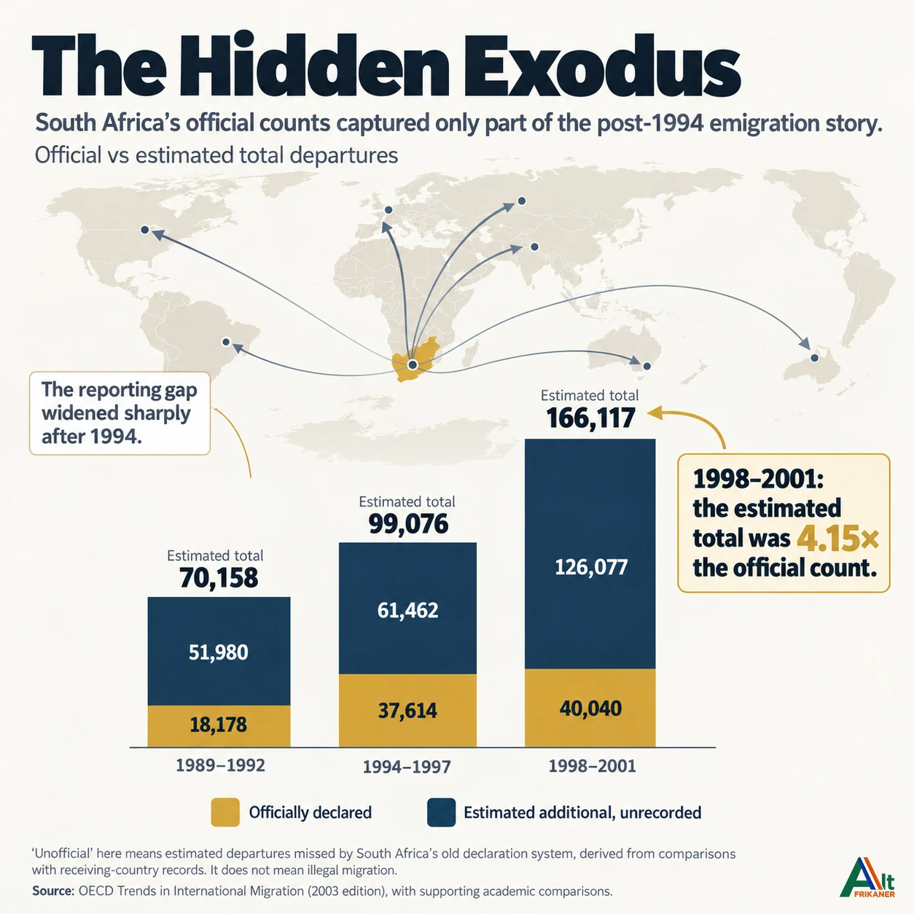
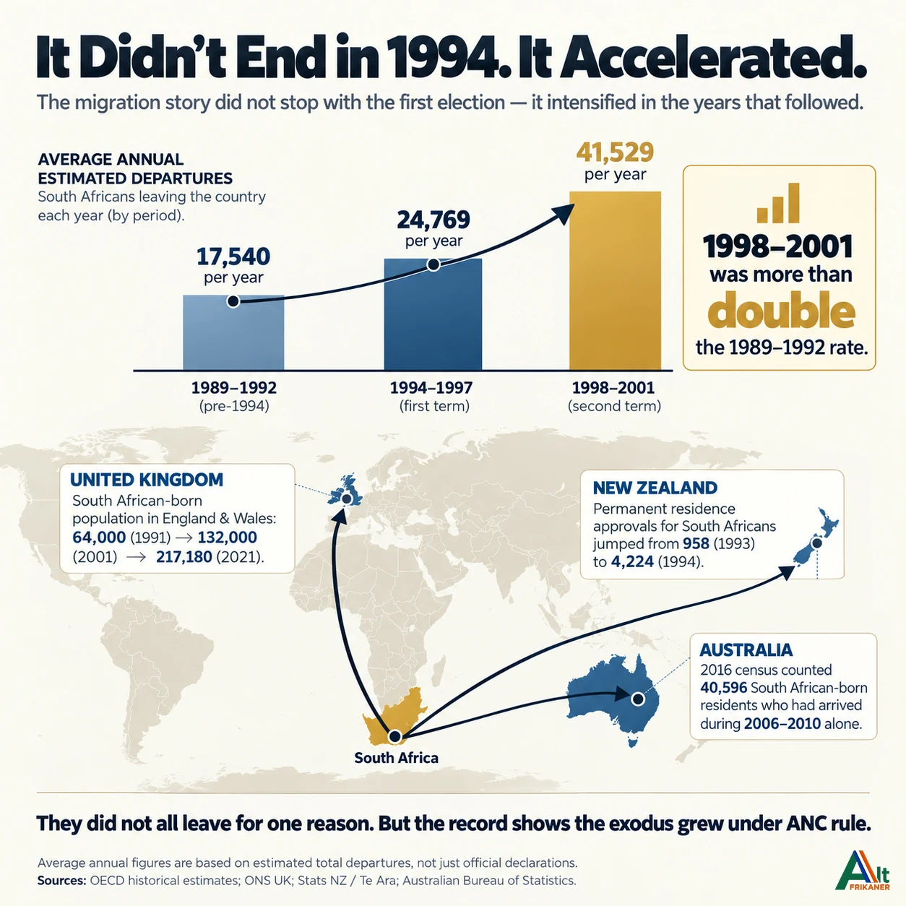
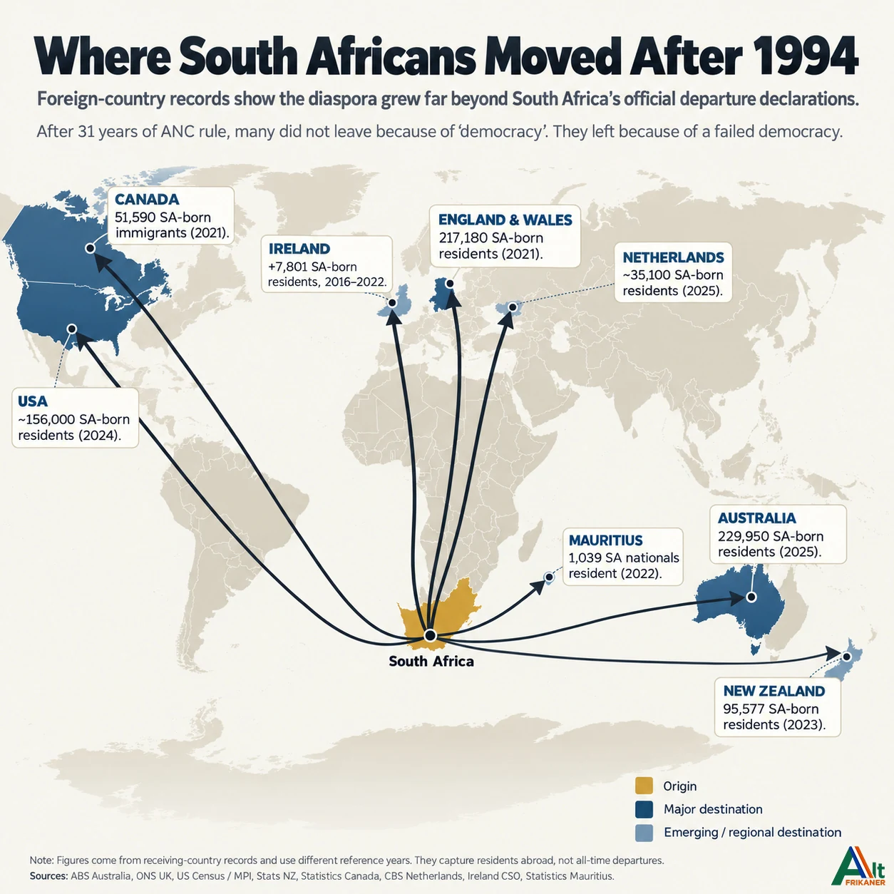
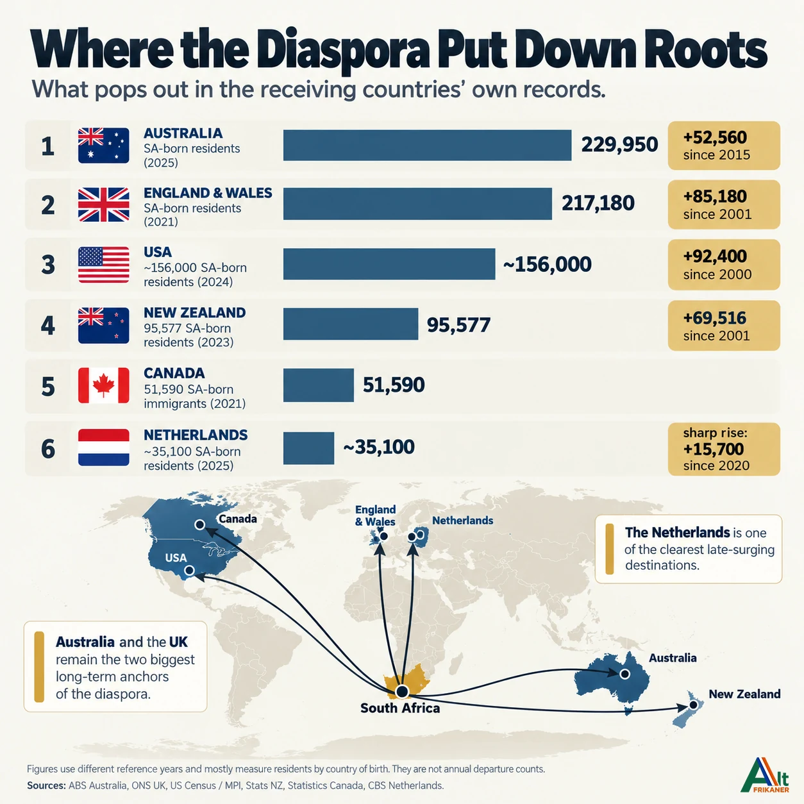
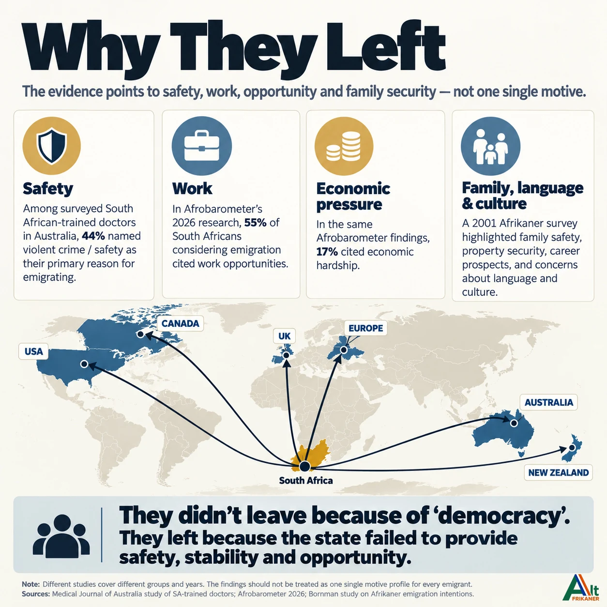

There is a familiar response whenever South Africa's post-1994 emigration is discussed. White South Africans, particularly Afrikaners, supposedly left because they could not accept the country's new democratic government.
It is an easy explanation. It is also an incomplete one.
If people were simply fleeing the arrival of democracy in 1994, why did emigration accelerate again years after the election? Why did substantial numbers continue leaving during the 2000s, 2010s and beyond?
And why were they not all white?
The evidence, including records from Australia, Britain, New Zealand and other receiving countries, tells a story extending far beyond a single election.
The Exodus That Official Statistics Missed
South Africa's old emigration figures have a serious problem. They largely counted people who officially declared that they were leaving permanently.
Thousands never made that declaration.
Some departed on temporary visas, accepted jobs abroad and eventually settled permanently. Others initially intended to return but never did.
An investigation by the Organisation for Economic Co-operation and Development (OECD), published in 2004, exposed the scale of the discrepancy.
Between 1989 and 1992, before democratic government, an estimated 70,158 South Africans emigrated.
During 1994 to 1997, the estimated number increased to 99,076.
Then came the striking acceleration.
Between 1998 and 2001, the estimated number reached 166,117, equivalent to approximately 41,529 departures annually.
That was more than double the estimated annual rate of 1989 to 1992.
But South Africa officially recorded only 40,040 emigrants during 1998 to 2001.
The difference was approximately 126,077 additional estimated departures not captured by the official declarations.
The OECD's adjusted estimate was 4.15 times the declared figure.
These additional departures were reconstructed using research incorporating receiving-country statistics. They are not individual proof that every person deliberately failed to declare emigration.
Nevertheless, the conclusion is unmistakable. South Africa's official departure records substantially understated emigration.


The World Was Counting South Africans
What South Africa failed to record, other countries were often documenting.
Australia's Bureau of Statistics estimated 229,950 South African-born residents in June 2025, compared with 177,390 in 2015.
England and Wales counted 217,180 South African-born residents in their 2021 census.
The United States had approximately 156,000 South African-born residents in 2024, while New Zealand recorded 95,577 in its 2023 census.
The Netherlands provides another striking example. Its South African-born population increased from approximately 19,400 in 2020 to 35,100 in 2025.
These figures represent overseas residents, not everyone who departed after 1994. They include people who emigrated earlier, and the reference years differ.
But collectively, they establish something important. Large South African communities continued developing overseas long after the democratic transition.
The movement did not end with Nelson Mandela's election.


Mostly White, But Never Exclusively White
The early post-1994 migration wave was disproportionately white, particularly among skilled professionals.
Historical research describes substantial emigration among white South Africans, including Afrikaners and English-speaking South Africans.
New Zealand's official historical encyclopedia characterises its South African immigration during the 1990s as predominantly white, while also documenting black, coloured and Indian South African arrivals.
Researcher Elirea Bornman's 2005 study, based on a nationwide survey conducted in 2001, found especially high emigration intentions among Afrikaans-speaking white respondents.
Their principal concerns included personal safety, family security, employment prospects, property protection, language and cultural preservation.
The longer-term demographic figures are equally revealing.
Statistics South Africa's 2026 population estimates incorporate a cumulative net outward migration of approximately 503,562 white South Africans between 2001 and 2026. This is a demographic estimate, partly incorporating projections, rather than a count of individually verified departures.
Net outward migration also accounts for immigration and return migration. Gross departures may therefore be higher.
However, neither these estimates nor overseas birthplace censuses establish the exact white proportion of every South African who emigrated during the full post-1994 period.
Black, coloured and Indian South Africans also pursued opportunities abroad. Their stories belong in the historical record.
The changing composition of emigration matters. A country losing experienced professionals, entrepreneurs and young graduates faces consequences irrespective of their race.
Why Did They Leave?
One revealing study appeared in the Medical Journal of Australia in 2010.
Researchers investigated the motivations of South African-trained doctors who had emigrated to Australia.
Among respondents who departed from 1990 onward, 44% identified violent crime or safety concerns as their primary motivation.
This was a particular group of medical professionals, not a representative survey of every emigrant. Nevertheless, it provides evidence that security concerns influenced real departure decisions.
Bornman's research identified similar concerns among Afrikaners, alongside career prospects and cultural considerations.
More recent research reveals the importance of economic opportunity.
In findings published by Afrobarometer in 2026, 26% of surveyed South Africans had considered emigrating. Among those considering departure, 55% cited employment opportunities and 17% economic hardship.
These were intentions rather than completed departures, but they demonstrate that dissatisfaction with opportunities remains an important part of the migration debate.
People may also emigrate for family reunification, education, international experience or better salaries. Immigration policies in receiving countries influence who can leave and where they settle.
No single explanation accounts for everyone.

Democracy Was Not the Same as ANC Governance
Here lies the distinction too often ignored.
Democracy describes a system in which citizens choose their representatives. It does not guarantee that those representatives will govern effectively.
A person can support democratic elections while opposing government policies, questioning employment legislation, fearing criminal violence or becoming frustrated with economic conditions.
Leaving because of those concerns does not automatically amount to rejecting democracy.
Some South Africans undoubtedly opposed the political transition itself. Others emigrated before 1994, while some who previously left have since returned.
The historical evidence does not justify pretending otherwise.
But it is equally misleading to dismiss three decades of emigration as a reaction against democratic government.
The ANC's record on employment, policing, public services and economic opportunity is a legitimate subject of scrutiny when examining why South Africans have continued to leave.
The evidence supports serious questions about the relationship between governance and emigration, even where the precise contribution of individual policies cannot be quantified.
The Cost of Losing Citizens
Every emigrant represents more than an entry in a spreadsheet.
A departing doctor may mean lost medical experience. An engineer takes years of training abroad. A business owner may relocate investment, employment opportunities and future tax contributions.
Families are separated. Communities lose members. Children grow up speaking with foreign accents while remembering a country their parents once called home.
And some of those families will never permanently return.
South Africa held its first democratic election in April 1994. More than three decades later, the question is not simply why people left when the political system changed.
It is why so many continued leaving in the years that followed.
For many emigrants, the issue was not the existence of democracy. It was whether the government elected through that democracy could provide the safety, stability and opportunities they expected.
An election gives a government its mandate.
What it delivers afterwards determines whether its citizens still see their future at home.
Sources & references
- OECD, Trends in International Migration 2003 (2004), Chapter III, p. 119.
- Australian Bureau of Statistics, Australia's Population by Country of Birth, June 2025.
- Office for National Statistics, 2021 Census: Country of Birth, England and Wales.
- Migration Policy Institute, Sub-Saharan African Immigrants in the United States, based on US Census Bureau data.
- Te Ara, Encyclopedia of New Zealand, South Africans: Migration.
- Statistics Netherlands (CBS), Tijdlijn Migratie, 1849–2025.
- Elirea Bornman, Emigrasie onder Afrikaners vandag (2005).
- Arnold and Lewinsohn, Motives for Migration of South African Doctors to Australia Since 1948, Medical Journal of Australia (2010).
- Afrobarometer, Dispatch AD1108 (2026).
- Statistics South Africa, Mid-year Population Estimates 2026.